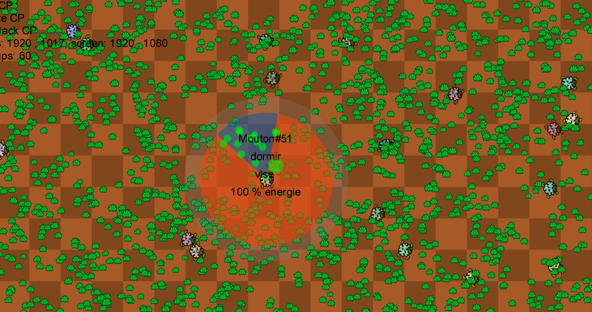
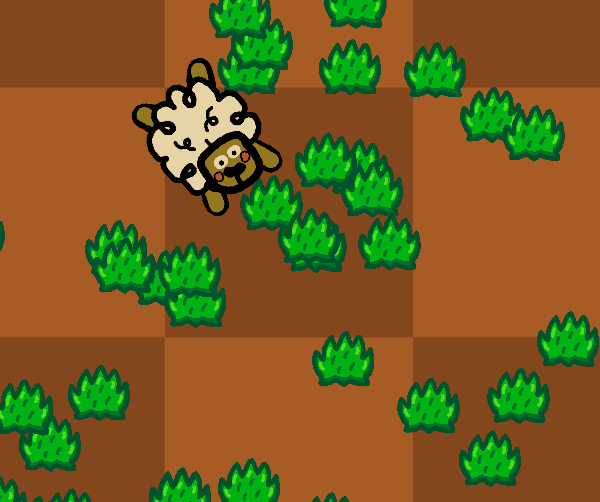
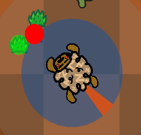
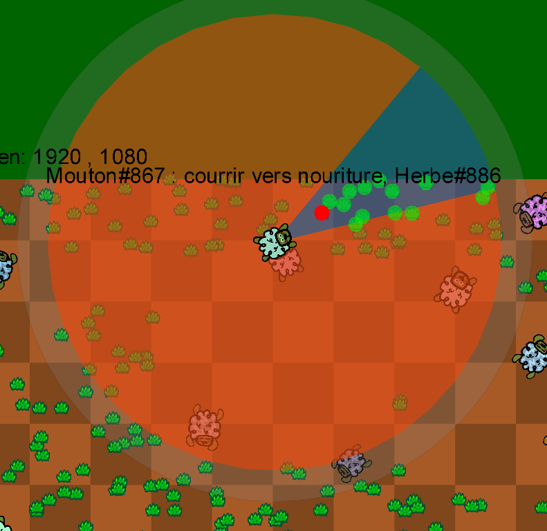

Ecosystem Simulation
Modular Software Architecture in C#
As part of our software architecture course, we developed an ecosystem simulation software
designed with a highly modular architecture in .NET. This project simulates complex
interactions between different species in an evolving natural environment.
Simulation Overview:

Simulation Concept
The simulation models a complete ecosystem where three types of entities interact:
- Sheep: Herbivores that feed on grass and can flee from predators
- Wolves: Predators that hunt sheep to survive
- Grass: Primary producer that grows naturally and feeds herbivores
Entities and their behaviors:

Modular Architecture
The project is designed with a clear separation between the simulation engine and the graphical interface:
- Simulation Engine: Completely independent from graphics, handles business logic
- Graphical Interface: Developed with MonoGame, visually represents simulation state
- Entity System: Architecture based on modular entities with autonomous behaviors
- Finite State Machines: Control complex behaviors for each entity type
Evolution System
Each entity possesses heritable characteristics that evolve across generations:
- Speed: Determines movement velocity
- Size: Influences interactions and energy consumption
- Field of Vision: Perception angle (0° to 360°)
- Vision Distance: Detection radius for other entities
- Genetic Mutations: Random variations during reproduction


Genetic Evolution:
Adaptive Behaviors
Sheep
Simple behavioral automaton managing transitions between:
- Food searching
- Resting to recover energy
- Fleeing when predators are present
- Active feeding
Wolves
More complex automaton including:
- Active hunting with acceleration towards prey
- Territorial searching
- Rest and recovery
- Adaptive predation strategies
Grass
Automatic growth and progressive energy regeneration.
Behavioral Automata:
Technical Optimizations
- Chunk System: Spatial optimization for performance
- Responsive Interface: Fully modular window sizing
- State Saving: System allowing to save and restore simulation state
- Energy Management: Reproduction system based on energy accumulation
User Interface:
Technologies Used
- C# (.NET Framework)
- MonoGame (Graphics Rendering)
- Modular Architecture
- Finite State Machines
- Genetic Algorithms
External Links
Key Learnings
This project allowed me to deepen my knowledge in:
- Modular software architecture and separation of concerns
- Advanced object-oriented programming in C#
- Implementation of finite state machines for behavioral AI
- Performance optimization in real-time simulations
- Graphics development with MonoGame
- Modeling complex and emergent systems